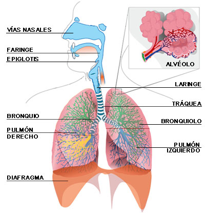

Enfermedades en vías respiratorias

Generalidades:
Existen muchas enfermedades de las vías respiratorias, en su mayoría causadas por agentes patógenos. Las enfermedades infecciosas se agudizan en los meses de otoño e invierno. El contagio más frecuente es por vía aerea. Los grupos más vulnerables son niños, ancianos y mujeres embarazadas. Algunas de ellas se pueden prevenir mediante la vacunación.
De acuerdo al lugar donde se localizan se dividen en enfermedades de las vías respiratorias altas (cabeza garganta) y bajas (torax); los síntomas pueden incluir:
Además de los agentes patógenos también existen una serie de sustancias que afectan las vías respiratorias: irritantes, inhalantes, el cigarro, tóxicos, pelos de animales, ácaros (parásitos). El asbesto es un material que aumenta el riesgo de cáncer de pulmón. La sensibilidad de cada persona a estas sustancias es distinta.
Causas menos frecuentes puede ser la alteración de otros órganos que llegan a afectar al sistema respiratorio, como el reflujo gastroesofágico que puede causar tos.
Pares relacionados:
Bronquitis, Neumonía, Amigdalitis, Faringitis:
En esta sección: